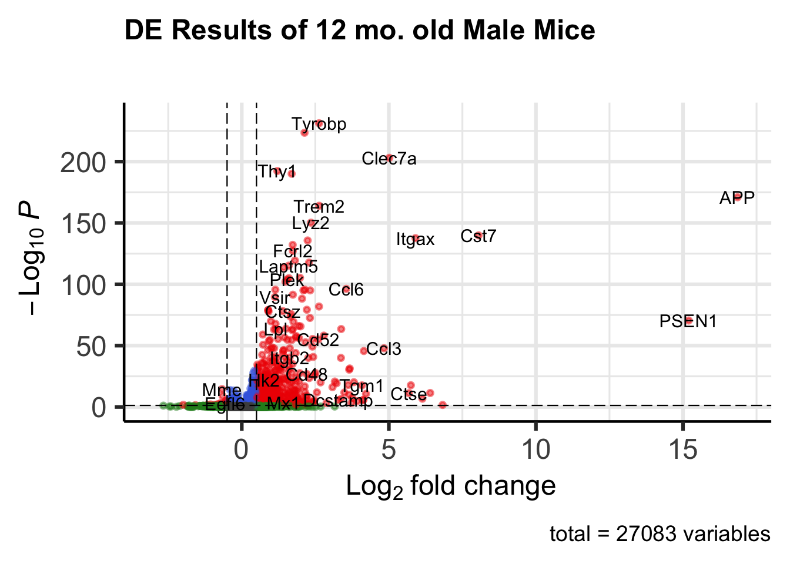

if (!requireNamespace("BiocManager", quietly = TRUE))
install.packages("BiocManager")
BiocManager::install(c("DESeq2", "EnhancedVolcano"))AD Knowledge Portal Workshop: Differential Expression Analysis of 5XFAD mouse models
This notebook will take the raw counts matrix and metadata files we downloaded in the first part of the workshop (5XFAD_data_R_tutorial.qmd) to run a basic differential expression analysis on a single time point (12 months) in male mice. You can amend the code to compare wild type and 5XFAD mice from either sex, at any time point. For a more in-depth tutorial on DESeq2 and how to handle more complicated experimental setups, see this vignette on DESeq2.
The data used in this notebook is obtained from The Jax.IU.Pitt_5XFAD Study, which can be found here on the AD Knowledge Portal.
Setup
Install and load packages
We will need several new packages from Bioconductor to run this analysis:
If not already installed, be sure to install the reticulate, tidyverse, and synapseclient packages from part 1 of this workshop. As in part one of the workshop, we will be using the Python synapseclient via reticulate.
Load necessary libraries.
library(DESeq2)
library(ggplot2)
library(EnhancedVolcano)
library(dplyr)
library(readr)
library(tibble)
library(reticulate)
# Tell reticulate to use the Python environment it manages, even if you have
# other Python installations or environments on your computer
Sys.setenv(RETICULATE_USE_MANAGED_VENV = "yes")
# Install Python and synapseclient, if needed, and activate the environment
py_require("synapseclient")
# python import
syncli <- import("synapseclient")Download counts and metadata from Synapse
The code below is a (more condensed) repeat of the code from Part 1 of the workshop (5XFAD_data_r_tutorial.qmd) that fetches the counts file and metadata files. If you have just run that notebook and still have counts and covars in your environment, you likely do not need to re-run the code below and can skip to Modify the data for analysis.
First, we log in to Syanpse:
syn = syncli$Synapse()
syn$login()Then, we fetch the counts and metadata files. As mentioned in part 1, it is good practice to assign the output of syn$get to a variable and use variable$path to reference the file name, as done below. For this part of the workshop, we will skip the bulk download step for metadata files and instead download each file by ID.
# counts
counts_id <- "syn63855360"
counts_file <- syn$get(counts_id,
downloadLocation = "files/",
ifcollision = "overwrite.local")
counts <- read_tsv(counts_file$path, show_col_types = FALSE)
# individual metadata
ind_metaID <- "syn63084319"
ind_file <- syn$get(ind_metaID,
downloadLocation = "files/",
ifcollision = "overwrite.local")
ind_meta <- read_csv(ind_file$path,
# Force individualID to be read as a string
col_types = list(individualID = col_character()),
show_col_types = FALSE)
# biospecimen metadata
bio_metaID <- "syn63587028"
bio_file <- syn$get(bio_metaID,
downloadLocation = "files/",
ifcollision = "overwrite.local")
bio_meta <- read_csv(bio_file$path,
# Force individualID to be read as a string
col_types = list(individualID = col_character()),
show_col_types = FALSE)
# RNA assay metadata
rna_metaID <- "syn63090748"
rna_file <- syn$get(rna_metaID,
downloadLocation = "files/",
ifcollision = "overwrite.local")
rna_meta <- read_csv(rna_file$path, show_col_types = FALSE)Join metadata files together
Join the three metadata files by IDs in common so we can associate the column names of counts (which are individualIDs) with individual mouse metadata and any assay-related metadata for each sample.
joined_meta <- rna_meta |> # start with the rnaseq assay metadata
# join rows from biospecimen that match specimenID
left_join(bio_meta, by = "specimenID") |>
# join rows from individual that match individualID
left_join(ind_meta, by = "individualID") Create age group column: This study has three main age groups, but the ages of the mice are non-integer values. Here we bin the ages into groups.
joined_meta <- joined_meta |>
# convert numeric ages to age_group categories --
# <= 5: 4 mo, > 5 and <= 10: 6 mo, > 10: 12 mo
mutate(age_group = cut(ageDeath,
breaks = c(0, 5, 10, Inf),
labels = c("4 mo", "6 mo", "12 mo")))
# Check that our sample groups look right (there should be 6 mice per group)
joined_meta |>
group_by(sex, genotype, age_group) |>
dplyr::count()Select the covariates needed for the analysis
covars <- joined_meta |>
dplyr::select(individualID, specimenID, sex, genotype, age_group)
head(covars)Modify the data for analysis
Clean up the covars data: coerce covars into a dataframe, label the rows by individualID, and check the result
covars <- as.data.frame(covars)
rownames(covars) <- covars$individualID
head(covars)Map Ensembl IDs to gene symbols using the symbol map (for readability). In reality you would want to use the Ensembl IDs as the gene identifiers in DE analysis because they are unique and not missing any values.
ensembl_to_gene <- read.csv(file = "ensembl_translation_key.csv")
named_counts <- counts |>
dplyr::left_join(ensembl_to_gene, by = "gene_id") |>
relocate(gene_name, .after = gene_id) |>
mutate(
# Fill missing gene symbols
gene_name = replace(gene_name, is.na(gene_name), "UNKNOWN"),
gene_name = replace(gene_name, gene_name == "", "UNKNOWN"),
# Force all symbols to have unique names
gene_name = make.unique(gene_name)
) |>
# Remove transcript ID and gene_id column
select(-gene_id, -`transcript_id(s)`)
head(named_counts)Order the data (counts columns and metadata rows MUST be in the same order), and subset the counts matrix and metadata to include only 12 month old male mice
meta.12M.Male <- covars |>
subset(sex == "male" & age_group == "12 mo")
# Subsets counts to only the 12 month male samples, and puts the samples in the
# same order they appear in meta.12M.Male
counts.12M.Male <- named_counts |>
# Set the rownames to the gene symbol, which also removes the "gene_name" column
column_to_rownames("gene_name") |>
# Only use columns that appear in meta.12M.Male, in that order
select(meta.12M.Male$individualID)This leaves us with 12 samples, 6 per genotype:
meta.12M.Male |>
group_by(sex, genotype, age_group) |>
dplyr::count()Verify that the columns in counts.12M.Male are in the same order as the individualIDs in meta.12M.Male:
all(colnames(counts.12M.Male) == meta.12M.Male$individualID)[1] TRUEWe should now have:
- A data.frame of metadata for 12-month-old male mice, one row per specimen
- A matrix of counts where each row is a gene and each column is a single specimen
We can now analyze this data with DESeq2.
Differential Expression Analysis using DESeq2
Set up data for analysis. All samples are male, 12 month old mice, so we are only interested in looking at the effect of genotype on the data. We specify this for DESeq2 by setting the design argument to ~ genotype. This tells DESeq2 to use the linear model expression ~ genotype when solving for the effect of genotype. For this to work properly, we need to make sure genotype is a factor so DESeq2 knows it is a categorical value.
Note: RSEM outputs non-integer count data, so we also need to round the values to integers for DESeq2.
meta.12M.Male$genotype <- factor(meta.12M.Male$genotype)
counts.12M.Male <- round(counts.12M.Male)
dds <- DESeqDataSetFromMatrix(countData = counts.12M.Male,
colData = meta.12M.Male,
design = ~ genotype)Note on R formula syntax: Using ~ variable will automatically be expanded to represent the linear equation expression ~ (beta1 * 1) + (beta2 * variable), where 1 represents the intercept of the equation and beta1 and beta2 are the coefficients that should be estimated.
For more complicated formula setup, refer to the DESeq2 vignette.
Back to analysis…
Filter out genes that have less than 10 counts across all samples. You can also use more stringent criteria like only keeping genes that have at least X counts in at least Y samples, but for this workshop we will just remove genes that sum to less than 10 counts total.
paste("Total genes before filtering:", nrow(dds))[1] "Total genes before filtering: 55489"dds <- dds[rowSums(counts(dds)) >= 10, ]
paste("Total genes after filtering:", nrow(dds))[1] "Total genes after filtering: 27083"Set wild-type mice (5XFAD_noncarrier) as the reference genotype, so the comparison is 5XFAD_carrier - 5XFAD_noncarrier.
dds$genotype <- relevel(dds$genotype, ref = "5XFAD_noncarrier") Run DESeq
This function normalizes the read counts, estimates dispersions, and fits the linear model using the formula we specified in design above (~ genotype)
dds <- DESeq(dds, parallel = TRUE)Extract a table of results
The significance threshold can be set using the alpha argument of the results function. Here we use 0.05.
res <- results(dds, alpha = 0.05)
summary(res)
out of 27083 with nonzero total read count
adjusted p-value < 0.05
LFC > 0 (up) : 1075, 4%
LFC < 0 (down) : 509, 1.9%
outliers [1] : 36, 0.13%
low counts [2] : 5237, 19%
(mean count < 5)
[1] see 'cooksCutoff' argument of ?results
[2] see 'independentFiltering' argument of ?resultsres <- as.data.frame(res)
head(res)What are some of the top up-regulated genes?
res |>
subset(padj < 0.05) |>
slice_max(order_by = log2FoldChange, n = 10) |>
select(log2FoldChange, padj)What are some of the top down-regulated genes?
res |>
subset(padj < 0.05) |>
slice_min(order_by = log2FoldChange, n = 10) |>
select(log2FoldChange, padj)Plot results
Volcano plot of differential expression results: all genes with p < 0.05 and log2FC > 0.5
plot_DEGvolcano <- EnhancedVolcano(
res,
lab = rownames(res),
x = 'log2FoldChange',
y = 'padj',
legendPosition = 'none',
title = 'DE Results of 12 mo. old Male Mice',
subtitle = '',
FCcutoff = 0.5,
pCutoff = 0.05,
# Remove the one really negative gene for better plotting
xlim = c(-3, 17),
pointSize = 1,
labSize = 4
)
plot_DEGvolcano
Save results table and plot:
write.csv(res, file="5XFAD_DEresults_12mo_males.csv", row.names=FALSE)
ggsave("VolcanoPlot.png", width = 8, height = 6, units = "in")
R Package Info
sessionInfo()R version 4.4.1 (2024-06-14)
Platform: aarch64-apple-darwin20
Running under: macOS 26.6
Matrix products: default
BLAS: /Library/Frameworks/R.framework/Versions/4.4-arm64/Resources/lib/libRblas.0.dylib
LAPACK: /Library/Frameworks/R.framework/Versions/4.4-arm64/Resources/lib/libRlapack.dylib; LAPACK version 3.12.0
locale:
[1] en_US.UTF-8/en_US.UTF-8/en_US.UTF-8/C/en_US.UTF-8/en_US.UTF-8
time zone: America/Los_Angeles
tzcode source: internal
attached base packages:
[1] stats4 stats graphics grDevices utils datasets methods
[8] base
other attached packages:
[1] reticulate_1.45.0 tibble_3.3.1
[3] readr_2.2.0 dplyr_1.2.0
[5] EnhancedVolcano_1.22.0 ggrepel_0.9.8
[7] ggplot2_4.0.2 DESeq2_1.44.0
[9] SummarizedExperiment_1.34.0 Biobase_2.64.0
[11] MatrixGenerics_1.16.0 matrixStats_1.5.0
[13] GenomicRanges_1.56.2 GenomeInfoDb_1.40.1
[15] IRanges_2.38.1 S4Vectors_0.42.1
[17] BiocGenerics_0.50.0
loaded via a namespace (and not attached):
[1] gtable_0.3.6 xfun_0.57 htmlwidgets_1.6.4
[4] lattice_0.22-9 tzdb_0.5.0 vctrs_0.7.2
[7] tools_4.4.1 generics_0.1.4 parallel_4.4.1
[10] pkgconfig_2.0.3 Matrix_1.7-5 RColorBrewer_1.1-3
[13] S7_0.2.1 lifecycle_1.0.5 GenomeInfoDbData_1.2.12
[16] compiler_4.4.1 farver_2.1.2 textshaping_1.0.5
[19] codetools_0.2-20 htmltools_0.5.9 yaml_2.3.12
[22] pillar_1.11.1 crayon_1.5.3 BiocParallel_1.38.0
[25] DelayedArray_0.30.1 abind_1.4-8 tidyselect_1.2.1
[28] locfit_1.5-9.12 digest_0.6.39 labeling_0.4.3
[31] fastmap_1.2.0 grid_4.4.1 colorspace_2.1-2
[34] cli_3.6.5 SparseArray_1.4.8 magrittr_2.0.4
[37] S4Arrays_1.4.1 withr_3.0.2 scales_1.4.0
[40] UCSC.utils_1.0.0 bit64_4.6.0-1 rmarkdown_2.30
[43] XVector_0.44.0 httr_1.4.8 bit_4.6.0
[46] otel_0.2.0 ragg_1.5.1 png_0.1-9
[49] hms_1.1.4 evaluate_1.0.5 knitr_1.51
[52] rlang_1.1.7 Rcpp_1.1.1 glue_1.8.0
[55] vroom_1.7.0 rstudioapi_0.18.0 jsonlite_2.0.0
[58] R6_2.6.1 systemfonts_1.3.2 zlibbioc_1.50.0